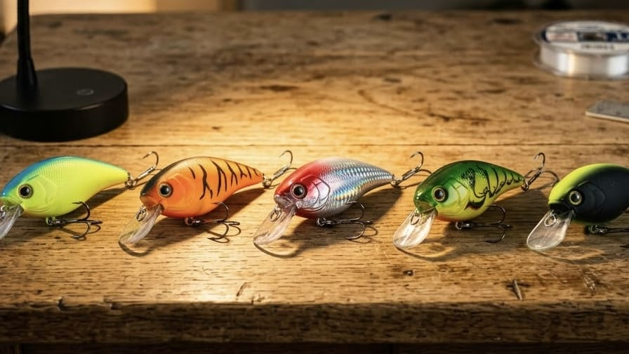
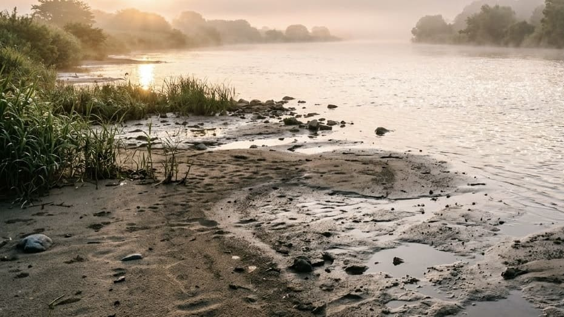

【ハゼクラ入門】ルアーで狙う江戸前の主役！ダイソー釣具で始める奥深きボトムゲーム

日本の秋の風物詩であり、エサ釣りの定番ターゲットである「ハゼ」。このハゼを、あえて3〜4cmの小さなルアー（クランクベイト）で狙う「ハゼクランク（通称：ハゼクラ）」が、ライトゲームファンを中心に大きなブームを巻き起こしています。 「エサを使わないから手が汚れない」という手軽さがある一方で、実はルアーの潜る深さ、海底の地形、そしてハゼの習性をパズルのように組み合わせていく、非常にゲーム性の高いルアーフィッシングなのです。今回は、手持ちのタックルと安価なルアーで今日から始められる、ハゼクラの極意を徹底解説します！
1. 食欲ではなく「怒り」で釣る？ハゼクランクの面白さ
「ハゼは虫エサじゃないと釣れないのでは？」と思うかもしれません。しかし、ハゼクラは単純にルアーをエサだと思わせて食わせているわけではないのです。
ハゼは砂泥底に縄張りを持ち、底を這うように近づいてくる外敵に対して威嚇・攻撃を仕掛ける習性があります。ルアーの先端にあるリップ（水受け板）で海底の砂や泥をコツコツと小突くことで、ハゼのテリトリーを意図的に荒らし、「なんだお前は！」と怒ってルアーにアタックしてきたところを針に掛ける。これがこの釣りの最大の面白さです。 つまり、「お腹が空いていない魚」であっても、本能的な縄張り意識を刺激することで釣果を引き出すことができるのです。
2. ハゼクラが成立する「場所・季節・潮」の絶対条件

ハゼならどこでもルアーで釣れるわけではありません。ハゼクラには得意な状況と明確な弱点が存在します。- 水深1〜1.5mの「浅場」がベストステージ： ハゼクラの得意分野は、河口や干潟周辺、潮が差し込むワンドなどの浅場（シャロー）です。水深が深すぎる場所では、軽量なルアーが底まで届くのに時間がかかり、潮流の影響で底の感触も失われてしまうため、ハゼクラには不向きです。
- 底質は「砂・泥」を狙え： ハゼが多くても、岩やゴロタ石だらけの場所はルアーが挟まってしまうためNGです。ルアーが底を叩きやすい砂泥底を見つけましょう。
- 潮位の変化を計算する： 浅場を狙うため、潮の満ち引き（潮位）の影響をダイレクトに受けます。「さっきまで連発していたのに、潮が満ちて水深が深くなり、ルアーが底に届かなくなってアタリが消えた」ということが頻繁に起こります。どの潮位でハゼが釣れたかを記録しておくことが上達の近道です。
- 季節の限界を知る： 夏から秋がベストシーズンですが、晩秋から冬にかけて水温が下がると、ハゼは産卵のために深場へと移動してしまいます。浅場を主戦場とするハゼクラは成立しにくくなるため、その時期は素直にエサ釣りに切り替えるのが賢明です。
3. タックルとルアー選び：専用品がなくても大丈夫！
ハゼクラは非常に軽いルアーを扱うため、ライトゲーム用のタックルを流用するのが基本です。
- ロッド＆リール： アジングロッド、メバリングロッド、あるいはUL（ウルトラライト）クラスのバスロッドが最適です。柔らかすぎる竿よりも、ルアーが底を叩く「コツコツ」という感触を手元に伝えてくれる、適度な張りがあるロッドが向いています。リールは1000〜2000番の小型スピニングリールで十分です。
- ライン： 軽いルアーを飛ばし、底の感触を得るために、PEライン（0.3〜0.4号）を使用し、先端にフロロカーボンのリーダーを結ぶのがおすすめです。
- ルアー（クランクベイト）の選び方： 一般的なハゼクラ用ルアーは3〜4cm程度の小型で、水に浮く「フローティングタイプ」が基本となります。最も重要なのは「釣り場の水深」と「ルアーの潜行深度」を合わせること。水深1.5mの場所で1mしか潜らないルアーを使えばハゼの視界に入らず、逆に浅すぎる場所で深く潜るルアーを使うと根掛かりを連発してしまいます。
4. ルアーロストを恐れるな！DAISO（ダイソー）釣具の神コスパ
底を意図的に小突く釣りである以上、どうしてもルアーが根掛かりして無くなってしまう（ロスト）リスクは避けられません。「高いルアーを無くすのが怖くて、思い切って底を攻められない…」という初心者最大のジレンマを解決してくれるのが、実は100円ショップの「DAISO」です。
- 110円の「エリア用クランクベイト（30mm）」： ダイソーから発売されている約3gの小型クランクは、水深1m前後を潜るフローティング仕様になっており、そのままハゼクラのパイロットルアーとして試せるスペックを持っています。1個110円なら、初めての場所でも躊躇なくボトム（底）をガシガシと攻め、底の地形を把握する練習ができます。
- 消耗品も一式揃う： ハゼクラと相性の良い「PEライン 0.3号（550円）」や、ルアー交換をワンタッチにする小型スナップ（110円）、収納用の小型ケース（110円）まで、ダイソーで揃えることが可能です。手持ちのロッドとリールさえあれば、数百円〜千円程度でハゼクラデビューできてしまうのです。
5. アクションの基本：「底を叩く」と「止める間」
アクションの基本は非常にシンプルです。
- キャストしたら、まずはロッドの先を水面に近づけるように下げ、リールを巻いてルアーを一気に底まで潜らせます。
- 手元に「ゴツゴツ」「コツコツ」と底を叩く感触が伝わってきたら、底をズルズル引きずるのではなく、ルアーがリップで底を小突き続けるスピードでゆっくり巻き続けます。
- ストップ＆ゴー： ハゼがルアーを追ってきているのに食いきらない時は、巻く手を一瞬止めてみましょう。フローティングタイプのルアーがフワッと浮き上がった瞬間に、たまらずハゼがアタックしてきます。
巻いている途中でルアーの振動（ブルブル感）が消えたら、ゴミや海藻を拾ったか、岩に挟まりかけているサインです。そのまま無理に巻き続けると完全に引っ掛かってしまうため、すぐに巻きを止めてルアーを浮上させることで、障害物を回避できます。
6. アタリの見極めと「掛からない」時の対処法
ルアーが底を叩く「コツコツ」という感触の中に、突如として魚の「コツッ！」という明確な違和感が混じります。これがハゼクラのアタリです。
しかし、ハゼクラで最も多い悩みが「アタリはあるのに針に掛からない」という現象です。 ハゼは口がとても小さな魚です。そのため、フック（針）のサイズ、形状、そして針先の鋭さが釣果を決定的に左右します。なかなか乗らない時は、巻きスピードやカラーを変えるだけでなく、針のサイズを落としたり、ダイソーでも売られている新しいフッ素コートのトレブルフック（110円）へこまめに交換することで、劇的に掛かりが良くなることがあります。
7. 足で稼ぐ「魚探しゲーム」を楽しもう
エサ釣りは「ハゼがいる場所に仕掛けを置いて待つ」釣りですが、ハゼクラは「ルアーを投げながら歩いて、ハゼの居場所を探し出す」釣りです。 数投して反応がなければ、どんどん横へ歩いて移動しましょう。ハゼは群れで固まっていることが多いため、1匹釣れた場所があれば、その周辺のコースや巻き速度を重点的に探ることで釣果が倍増します。
エサ釣りとは全く違う、ルアーフィッシング特有の「自分の足と頭を使って魚を探し出す喜び」がハゼクランクには詰まっています。ぜひ手持ちのライトタックルとダイソールアーを持って、近くの浅瀬へ出かけてみませんか？
📍 関東の生息・釣果スポット
※マップ上の赤いドットが釣れるポイントです。